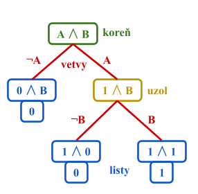

NÁSTROJE - LOGIKA
Pre UI je veľmi dôležité vedieť operovať s nadobudnutými vedomosťami. Tieto vedomosti pozostávajú z výrokov v jazyku reprezentácie znalostí. Ten má svoju syntax a sémantiku, ktorá definuje pravdivosť každého výroku v každom možnom svete. Možným svetom rozumieme matematickú abstrakciu, model, ktorý určuje pravdivosť alebo nepravdivosť každého výroku v danej situácii. Ak nejaký výrok platí v určitom modeli, hovoríme, že model mu vyhovuje. Pri riešení problému môžeme pomocou logiky nájsť model odpovedajúci nášmu cieľu. Z tohto modelu potom extrahujeme tie premenné, ktoré predstavujú akcie a sú označené ako pravdivé. Spoločne tvoria plán na dosiahnutie cieľa.
Výroková logika
Asi tou najjednoduchšou logikou je výroková logika. Rozlišujeme v nej:
- atomické výroky, pozostávajúce z 1 tvrdenia, logickej premennej, ktorá môže byť pravdivá / nepravdivá
- zložené výroky, ktoré sú zostavené z jednoduchších výrokov pomocou zátvoriek a logických spojok: konjunkcia, disjunkcia, implikácia, ekvivalencia, negácia, atď.

Tabuľka A
Logickú premennú a jej negáciu nazývame aj literály logickej premennej (pozitívny a negatívny literál). Ďalej hovoríme, že výrok je validný, ak je pravdivý vo všetkých modeloch. Tieto výroky sa nazývajú aj tautológie. Výroky, ktoré naopak nie sú pravdivé nikdy nazývame kontradikcie alebo nesplniteľné a výroky, ktoré nie sú kontradikciami nazývame splniteľné.
Niekedy sa tiež zíde výrok nahradiť nejakým ekvivalentným výrokom (viz. Tabuľka B).
Tabuľka B
S využitím vhodných ekvivalencií je možné prepísať výrok do tzv. normálnej formy, čiže tak, aby obsahoval len spojky ∧,∨ a ¬. Napr. výrok A ⇒ (B ∨ ¬C) je logicky rovnocenný výroku ¬A ∨ B ∨ ¬C. Špeciálnymi prípadomi sú:
-
Disjunktívna normálna forma (DNF) = Výrok je v tejto forme, ak má tvar disjunkcie niekoľkých literálov / konjunkcií literálov, pričom v jednom disjunktante sa literál každej premennej nachádza najviac raz. Napr. (B ∧ C) ∨ (A ∧ B ∧ ¬C).
Úplná disjunktívna normálna forma (ÚDNF) výroku má tvar disjunkcie konjunkcií, pre ktoré platí, že obsahujú literál každej premennej výroku práve raz. Napr. (B ∨ ¬C) ⇒ (A ∧ ¬B) je logicky rovnocenné (¬A ∧ ¬B ∧ C) ∨ (A ∧ ¬B ∧ C) ∨ (A ∧ ¬B ∧ ¬C).
Previesť výrok do jeho ÚDNF môžeme jednoducho tak, že sa pozrieme na všetky hodnoty jeho premenných, pri ktorých je pravdivý. Následne z každej takejto kombinácie hodnôt vytvoríme konjunkciu a tieto konjunkcie spojíme do disjunkcie.
-
Konjunktívna normálna forma (KNF) = Výrok je v tejto forme, ak má tvar konjunkcie niekoľkých literálov / disjunkcií literálov, pričom v jednom konjunktante sa literál každej premennej nachádza najviac raz. Napr. (A ∨ C) ∧ (A ∨ B ∨ ¬C).
Úplná konjunktívna normálna forma (ÚKNF) má tvar konjunkcie disjunkcií, pre ktoré platí, že obsahujú literál každej premennej výroku práve raz. Napr. (¬A ⇒ C) ⇒ [B ∨ (¬C ⇒ A)] je logicky rovnocenné (¬A ∨ ¬B ∨ C) ∧ (A ∨ ¬B ∨ C) ∧ (A ∨ ¬B ∨ ¬C).
Previesť výrok do jeho ÚKNF môžeme tak, že sa pozrieme na všetky hodnoty jeho premenných, pri ktorých je nepravdivý. Následne z každej takejto kombinácie hodnôt vytvoríme disjunkciu, tieto disjunkcie znegujeme a spojíme do konjunkcie.
Metódy hľadania pravdivostných hodnôt výroku
Ak výrok obsahuje n logických premenných, potom existuje 2n možností ako za ne dosadiť hodnoty 0, 1. K priradeniu pravdivostnej hodnoty výroku pre každú z týchto možností sa najčastejšie využívajú 3 známe metódy:
- Asi najpriamejší spôsob ako zistiť, pravdivostné hodnoty výroku, je použiť Tabuľkovú metódu. To znamená vyplniť jeho pravdivostnú tabuľku pre všetky možné kombinácie hodnôt jeho logických premenných (viz. Tabuľka A).
-
Quineou algoritmus využíva k určovaniu pravdivostných hodnôt výroku stromovú reprezentáciu (viz. Diagram A).
Strom sa skladá z uzlov vzájomne nejako prepojených vetvami (hranami). Dokazovaný výrok predstavuje koreň, teda počiatočný uzol stromu. Z tohto koreňa vyvedieme 2 vetvy. Vyberieme si nejakú premennú výroku a v jednej z vetiev ju označíme za pravdivú (dosadíme za ňu 1), zatiaľ čo v druhej za nepravdivú (dosadíme za ňu 0). Tieto vetvy označíme príslušnými symbolmi pre literály premennej (A a ¬A). Vzniknú tak 2 nové výroky, teda 2 nové uzly stromu. Výroky zjednodušíme, ak je to možné. Následne celý proces opakujeme: z niektorého uzlu, z ktorého sme ešte nevyviedli žiadne vetvy, vyvedieme 2 vetvy k 2 novým uzlom, predstavujúcich 2 možné hodnoty nejakej premennej daného výroku. Nové výroky zjednodušíme a opakujeme.
Postupným vetvením sa vždy nakoniec dostaneme k uzlu hodnoty 0 alebo 1, bez akýchkoľvek premenných. Z takéhoto uzlu už nemožno vyviesť nové vetvy a nazývame ho listový uzol (list). Celý proces skončí, až keď nám dôjdu uzly, z ktorých by sme mohli viesť nové vetvy. Súbor listových uzlov potom predstavuje pravdivostné hodnoty, ktoré pôvodný výrok nadobúda pre jednotlivé hodnoty jeho premenných.Diagram A
-
Vždy keď z uzlu vyvádzame vetvy do nových uzlov, robíme to jedným z nasledovných spôsobov:Tablová metóda spočíva v postupnej úprave výroku do jeho disjunktívnej normálnej formy (DNF). Taktiež využíva stromovú reprezentáciu (viz. Diagram B). Každý uzol reprezentuje jeden disjunktant DNF = konjunkciu výrokov, ktoré majú byť splnené naraz, aby pôvodný výrok platil. Znak konjunkcie sa pre zjednodušenie nahrádza čiarkou, teda v uzloch sú uložené len zoznami výrokov, ktoré majú byť splnené naraz. Koreňom stromu je dokazovaný výrok. Ak obsahuje implikácie alebo ekvivalencie, prepíšeme ho s pomocou logických ekvivalencií do normálnej formy.

Diagram B
- Odstraníme konjunkciu prepisom na zoznam výrokov. Tým vznikne 1 nový uzol.
- Odstraníme disjunkciu pomocou vetvenia. Z pôvodného uzlu vyvedieme vetvy do 2 nových uzlov, pričom každý bude obsahovať jednoho z členov danej disjunkcie a k tomu všetky ďalšie členy pôvodného zoznamu.
Takto sa postupne dopracujeme k súboru listových uzlov, ktoré už nemožno ďalej vetviť. Každý listový uzol obsahuje zoznam literálov, ktorých súčasná platnosť znamená platnosť pôvodného výroku. Ak ide o nesplniteľnú konjunkciu (obsahuje oba literály jednej premennej), hovoríme, že je list uzavretý. Ak ide o splnitěnú konjunkciu, tak je list otvorený a výrok je pre danú kombináciu literálov platný. Otvorené listové uzly predstavujú disjunktanty úplnej DNF výroku.
PRÍKLAD A:
Určte kedy je pravdivý výrok: “Ak bude v dome zima, tak zapnem kúrenie a ak pôjdem preč z domu, tak kúrenie vypnem.”
RIEŠENIE:
Najprv z výroku extrahujeme jednotlivé atomické výroky a zapíšeme ho vo formálnom tvare:
A: V dome bude zima.
B: Pôjdem preč z domu.
C: Zapnem kúrenie.
Zložený výrok má tvar (A ⇒ C) ∧ (B ⇒ ¬C). Ukážeme si riešenie s využitím 3 základných metód: Tabuľková, Tablová a Quineov algoritmus.
Tabuľková metóda
Tablová metóda
Quineov algoritmus
Metódy dedukcie
Dôležitou súčasťou logiky je schopnosť odvodiť zo súboru platných výrokov nejaké nové výroky, pomocou logicky správnych pravidiel. K dokazovaniu výroku môžeme pristupovať rôzne. Ak dedukciou dokážeme pravdivosť nejakého výroku, ide o priamy dôkaz. Ak dokážeme nepravdivosť jeho negácie ide o dôkaz nepriamy (dôkaz sporom).
Jedným z najjednoduchších odvodzovacích systémov je prirodzená dedukcia, ktorá sa asi najviac podobá bežnému priebehu odvodzovania. Využíva 8 základných pravidiel (viz. Tabuľka C). Použitie prirodzenej dedukcie si ale často vyžaduje určitý stupeň predvídavosti a rôzne “fígle”, čo môže byť v praxi na príťaž.
Tabuľka C
Iná známa metóda dedukcie je rezolučná metóda. Vystačí si len s jediným tzv. rezolučným pravidlom: Ak platí (A ∨ B) a zároveň (C ∨ ¬B), tak platí aj (A ∨ C). Pracuje s tzv. klauzulami. Klauzula je literál / disjunkcia literálov. Disjunkcia literálov rovnakej premennej je vždy pravdivá, teda ide o tautológiu. Špeciálnym prípadom je prázdna klauzula, ktorú označujeme ☐.
Rezolučná metóda sa dá využiť napr. k určeniu splniteľnosti výroku. Tento výrok najprv prevedieme do konjunktívnej normálnej formy (KNF). Jednotlivé konjunktanty (disjunkcie) budú našimi klauzulami. Vynecháme jedine disjunkcie, ktoré sú tautológiami, pretože tie nám neposkytnú žiadne užitočné informácie (ak by boli všetky konjuktanty KNF nášho výroku tautológie, tak by aj výrok sám bol tautológiou). Množinu klauzulí následne rozširujeme opakovaným aplikovaním rezolučného pravidla. Ak narazíme na prázdnu klauzulu, tak je výrok nesplniteľný, teda nikdy nemôže byť pravdivý. Ak dôjdu výroky, na ktoré by bolo možné uplatniť rezolučné pravidlo, tak je výrok splniteľný.
Príklad B:
Určte či je splniteľný výrok: “Bude zima alebo teplo, ale zároveň nebude ani zima ani teplo.”
Riešenie
Je pomerne zjavné, že ide o kontradikciu. Napriek tomu si ukážeme formálny dôkaz. Najprv z výroku extrahujeme jednotlivé atomické výroky a zapíšeme ho vo formálnom tvare:
A: Bude zima.
B: Bude teplo.
Zložený výrok má tvar (A ∨ B) ∧ ¬A ∧ ¬B. K riešeniu využijeme rezolučnú metódu.Výrok už je v KNF s troma konjunktami (A ∨ B), ¬A, ¬B, ktoré predstavujú naše klauzule. Aplikujeme na ne opakovane rezolučné pravidlo:
(A ∨ B) ∧ ¬A ⇒ B
B ∧ ¬B ⇒ ☐
Dostali sme prázdnu klauzulu, čo značí, že výrok je nesplniteľný, teda ide o kontradikciu.
Iné logické systémy
Predikátová logika
Zatiaľ čo výroková logika operuje len s faktami, predikátová logika operuje s objektmi, pre ktoré predikujeme nejaké vzťahy, vyplývajúce z faktov. Formálne modely sú teda zložitejšie ako tie pre výrokovú logiku, opisujú svet pomocou predmetov a vzťahov medzi nimi. Syntax stavia na syntaxi výrokovej logiky, ale pridáva výrazy, ktoré predstavujú objekty a tiež kvantifikátory. Kvantifikátory nám umožňujú vyjadriť vlastnosti nejakých kolekcií objektov. Univerzálny kvantifikátor (∀) robí vyhlásenie o všetkých objektoch a existenciálny kvantifikátor (∃) len o nejakom objekte. Ku kvantifikácii vlastností objektov sa využívajú premenné, ktoré na dané objekty odkazujú. Atomický výrok je pri tejto logike pravdivý len, ak medzi objektami menovanými vo výroku platí vzťah výrokom opísaný.
Fuzzy logika
Fuzzy logika je metóda rozmýšľania o logických výrokoch opisujúcich členstvo vo fuzzy množinách. Vychádza z teórie fuzzy množín, ktorá hovorí o tom, ako dobre objekt spĺňa nejaký neurčitý popis (napr. výška, hmotnosť). Pravdivostná hodnota výroku je teda číslo medzi 0 a 1, namiesto zvyčajného pravda / lož. Zložený výrok má hodnotu, ktorá je funkciou hodnôt jeho zložiek. V praxi sa využíva fuzzy riadenie, metodika zostavovania riadiacich systémov, v ktorých sú vstupy a výstupy reprezentované reálnymi číslami prepojenými fuzzy logikou.
Zdroje, užitočné odkazy, literatúra
RUSSELL, S. J. – NORVIG, P.: Artificial Intelligence: A Modern Approach (3nd ed.). Upper Saddle River, USA: Prentice Hall, 2003. ISBN 0-13-790395-2
Diplomová práca o Logickej dedukcii (Libuše Pavlisková, 2003)
Niečo viac o stromovej štruktúre
DNF a KNF
Online materiály z prednášok o Logike: